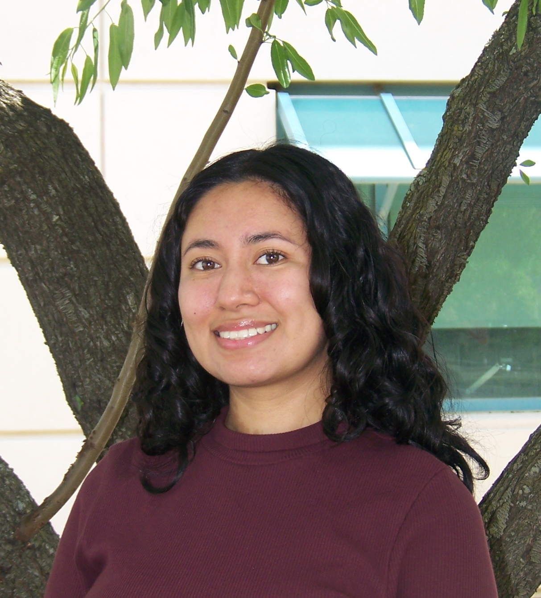

Jessica Cornejo-Casildo

Summary
My name is Jessica Cornejo-Casildo and I am currently
an undergraduate Computer Science student at UC Davis.
I am a hardworking indivudal who is committed to providing
a warm-welcoming space for underrepresented students
and youth in my community, to allow them not only grow as students but
also as young professionals.
Education
- University of California, Davis
- Bachelor of Science, Computer Science (Expected December 2026)
- CS Coursework: Software Development and Object Oriented Programming in C++, Programming and
Problem Solving, Data Structures, Algorithms, & Programming, Discrete Mathematics for Computer
Science, Algorithm Design and Analysis, Machine Dependent Programming
Leadership & Technical Involvement
- ColorStack UC Davis Chapter: Co-President, Website Developer
- HeadStarter: Software Engineering Fellow (Jul 2024 – Sep 2024)
- CALESS/SHPE (Society of Hispanic Professional Engineers): Member
Technical Skills
- Programming languages: Python, C++, JavaScript
- Web Development & Frameworks: HTML, CSS, React, Node.js, Next.js, Firebase
- Tools & Platforms: Figma, Canva, Salesforce
Technical Projects
- AI Pet Care Chatbot, HTML | CSS | Node.js | Next.js (Group Project)
-
Improved error handling and response logic using Node.js and Gemini API by refining system instructions
to better manage edge cases, invalid inputs, API failures, and message chunking that stayed within token
limits
-
Implemented a loading spinner in Next.js in order to reduce perceived wait time to give users feedback as
chatbot processed queries
-
Improved chatbot performance by using Node.js to preserve conversation context across API calls and
conducting edge case testing to refine prompt handling, reducing user clarification requests
- Web Development for UC Davis ColorStack |Next.js | CSS | React | (Group Project)
-
Led the creation of a comprehensive site map, optimizing page structure and user navigation flow
-
Crafted a dynamic Events Page incorporating interactive elements and theme integration
-
Improved chatbot performance by using Node.js to preserve conversation context across API calls and
conducting edge case testing to refine prompt handling, reducing user clarification requests
- Pantry Tracker, HTML | CSS | Next.js | Firebase (Independent Project)
-
Engineered a dynamic pantry tracker integrated with Firebase for real-time data storage, enabling users to
efficiently manage their household inventory and reduce food waste
Technical Experience
- DreamCatchers Youth: Data Analysis and Social Media Intern (Jun 2024 – Sep 2024)
-
Analyzed data from 5 surveys, identified 5 key themes and proposed 7 actionable next steps for org
-
Designed and implemented impactful data visualizations in Figma, summarizing key insights from parent
surveys into easily digestible insights for stakeholders
-
Developed resource section of website, providing 10 essential resources and key information summaries
to increase parent engagement and reduce inbound inquiries
-
Optimized social media strategy by implementing non-profit social media best practices, creating 15
targeted posts on Instagram and Facebook, resulting in +30% increase in engagement
-
Google Code Next Connect: Mentee (Oct 2021 – Mar 2022)
-
Completed 3 frontend coding assignments in HTML and CSS, mastering responsive layouts, flexbox, and
CSS animations through peer collaboration and mentorship
-
Recreated the Shopify homepage using HTML and CSS, implementing responsive design techniques and
optimizing for cross-browser compatibility
Other